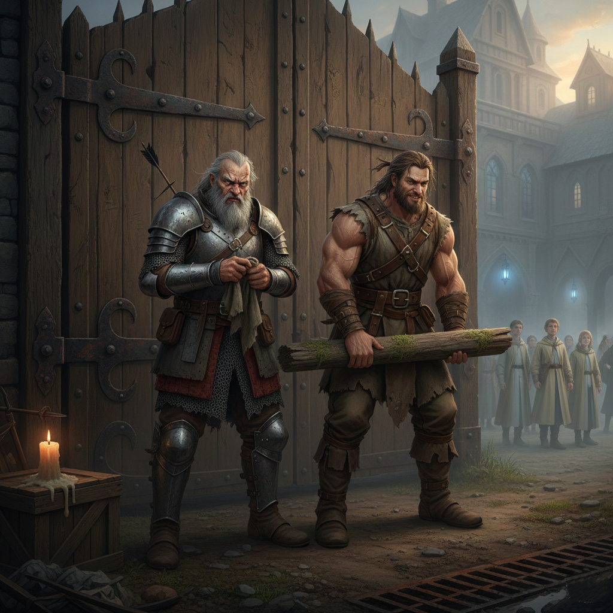
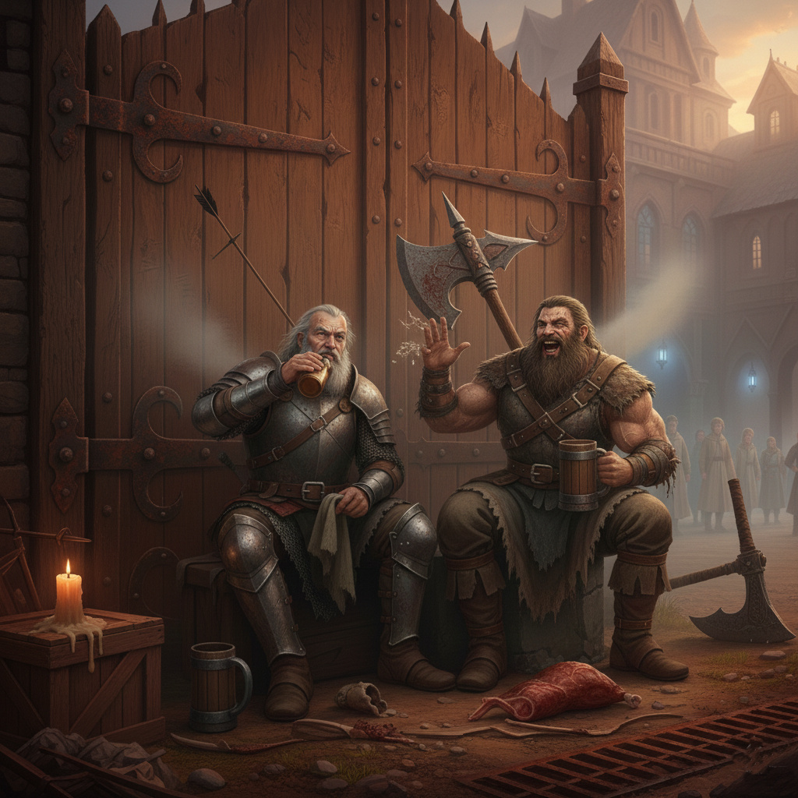
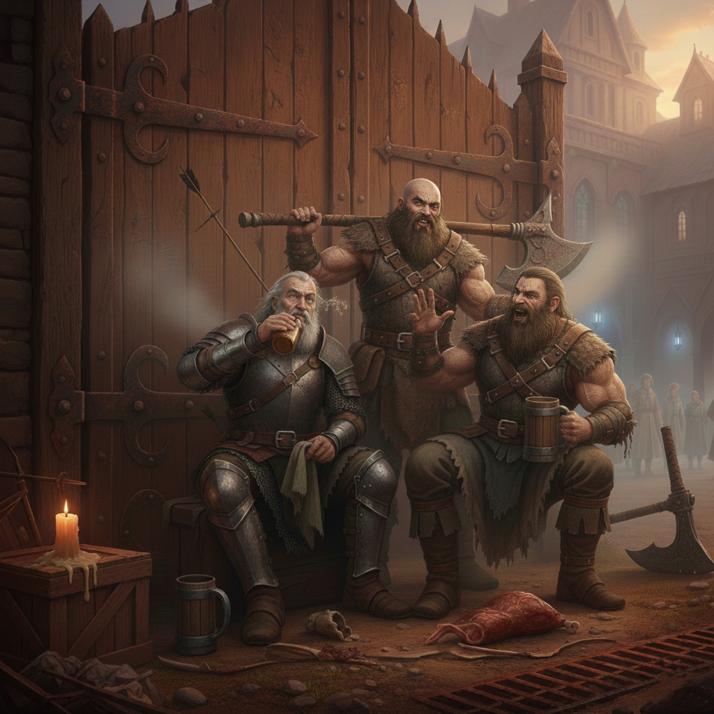
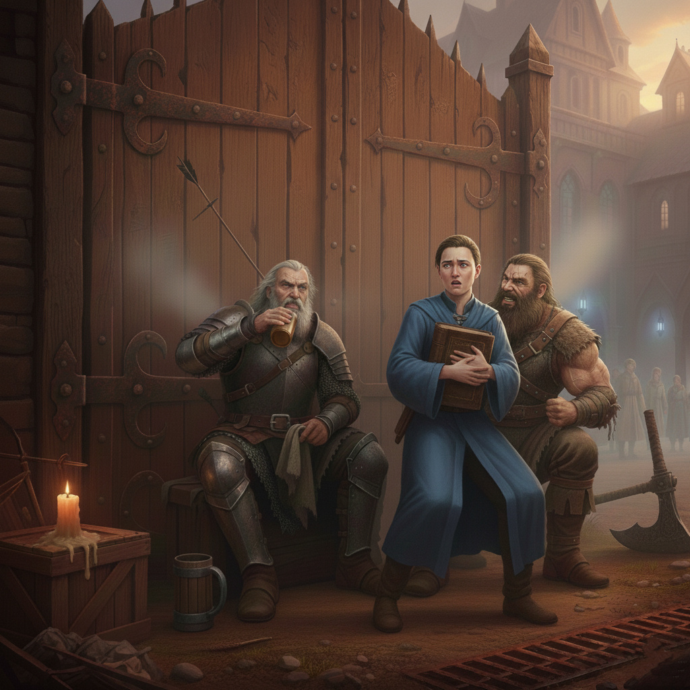
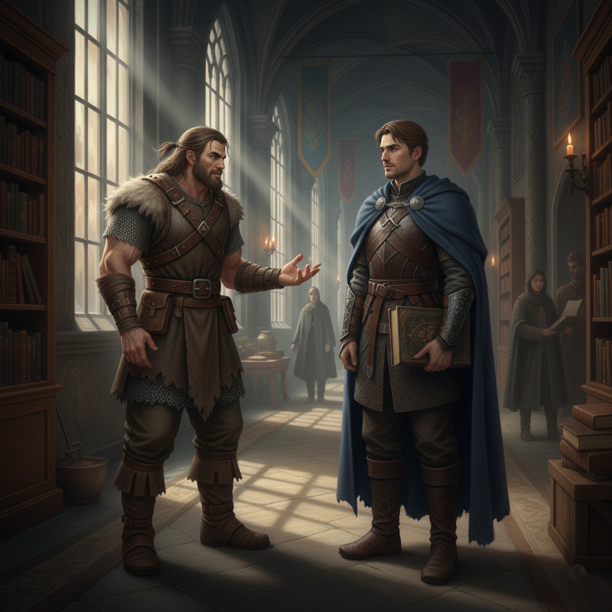
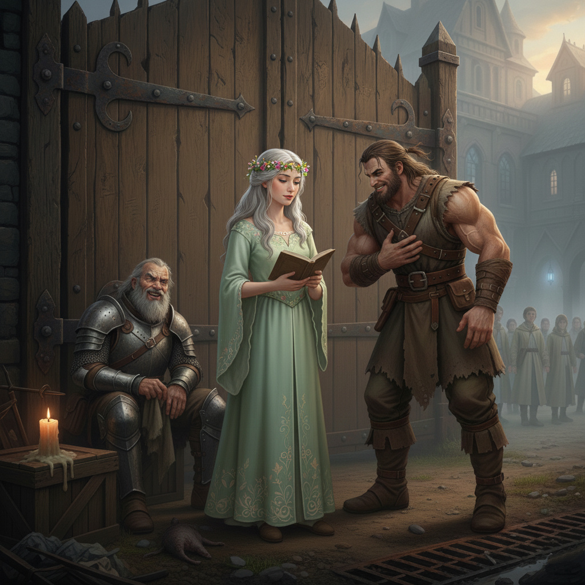
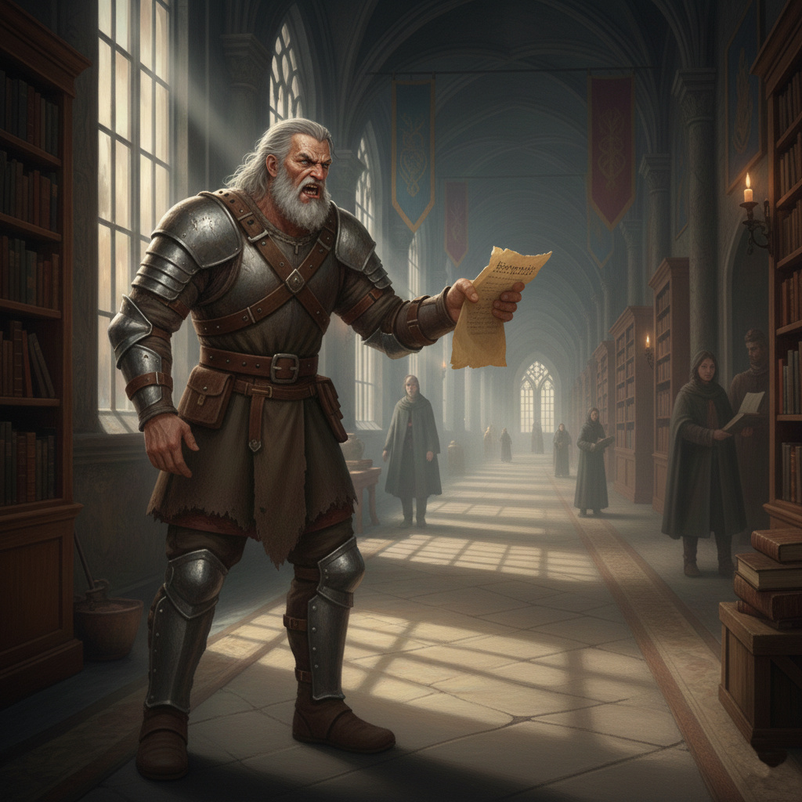
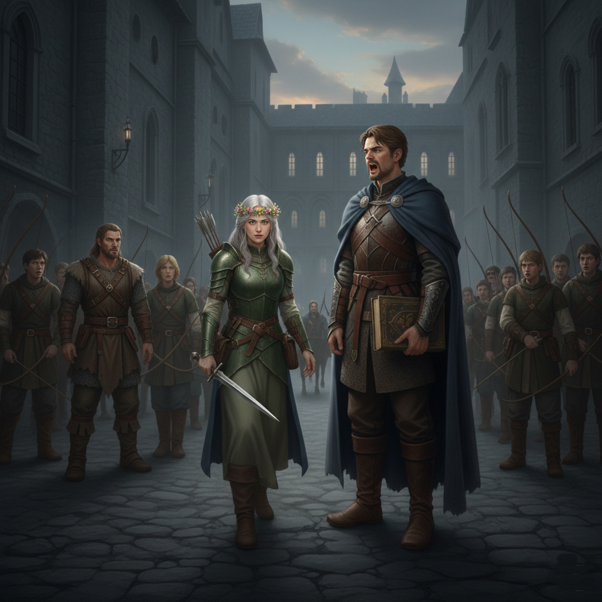
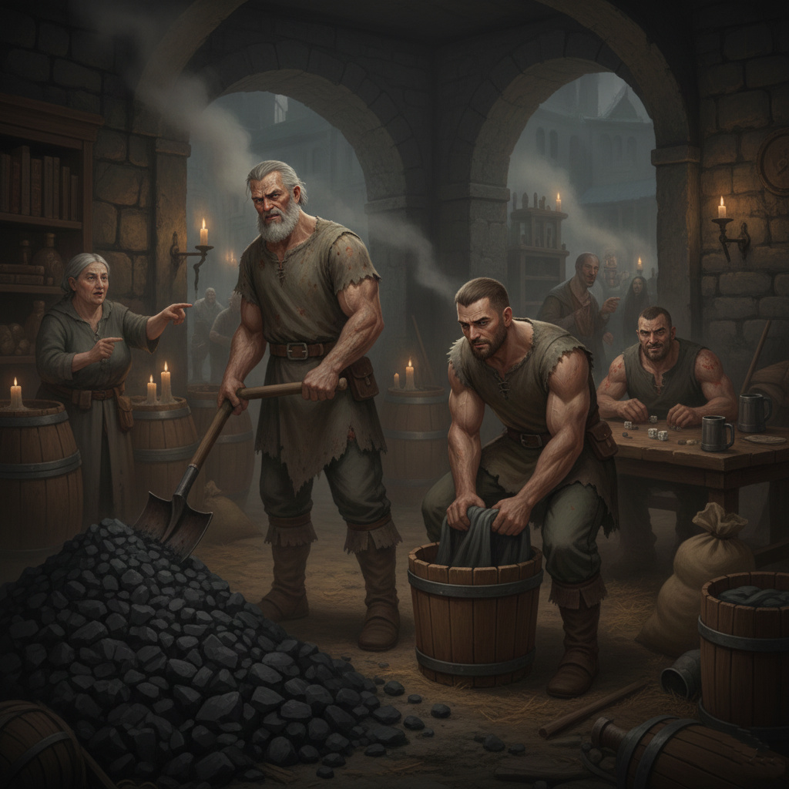

Egy mellékszál, a saját szórakoztatásunkra.
Bármilyen hasonlóság a való életből csak a véletlen műve (vagy talán nem?).
A Csillagtanoda súlyos tölgyfakapuja előtt a levegőben sült hús és fegyverolaj szaga keveredett a reggeli köddel. Xander, akinek az arca leginkább egy kiszáradt folyómederhez hasonlított, dühösen kente a rozsdát a vállvértjéről egy darab büdös ronggyal.
– Nézd már ezeket, Maethar – morogta Xander, meg sem emelve a tekintetét. – Úgy vonulnak be, mintha övék lenne a világ, pedig még a saját taknyukat sem tudják letörölni mágia nélkül.
Maethar, a kapuőr, épp egy vaskos gerendát emelt a helyére. Fiatal volt, az izmai feszültek a bőrén viselt nyers irha alatt, és vad, kócos sörényét csak egy bőrszíj tartotta össze. Ő volt az energia két lábon járó szobra, de még ő is eleresztett egy fáradt sóhajt.
– Tudom, mire gondolsz, öreg – bólintott Maethar, és leült egy kőbakra Xander mellé. – Ma reggel az egyik elsős megkért, hogy „legyek szíves” tartsam meg a botját, amíg ő kinyitja a kódexét, mert túl nehéz. Egy bot! Én az ő korában már egy döglött tulkot cipeltem a hátamon a hóviharban.
Xander gúnyosan felhorkant. – Botsúly... nevetséges. A múltkor láttam egyet a harmadévesek közül, aki „levitációs bűbájt” használt, hogy felvigye a reggelijét a lépcsőn. Mert elfáradt a lába! Én meg itt állok a visszereimmel, a hátamban egy tünde nyílheggyel, amit harminc éve nem tudtak kiszedni, és mégis én nyitom ki nekik azt a dög nehéz kaput.
Maethar elővett egy darab száraz húst, és dühösen beleharapott. – És a szabályok, Xander? Hallottad az új direktívát? „Törekedjünk a békés konfliktuskezelésre a folyosókon.” Tegnap két tanonc tűzgolyókkal dobálta egymást a könyvtár előtt. Oda mentem, hogy kicsit... nos, megneveljem őket a bárdom fokával, erre rám szólnak, hogy ne legyek „barbár”.
– Barbár? – Xander szeme villant egyet. – Mi tartjuk távol a falaktól a kósza orkokat meg a részeg kalandorokat, ők meg barbárnak hívnak, ha rendet teszel? Bezzeg ha elszabadul egy megidézett démon a pincében, akkor nem a „békés konfliktuskezelőt” hívják, hanem ordítanak: „Xander, Maethar, mentsenek meg, mert leharapják a fejemet!”
A két harcos egy pillanatra elhallgatott. A távolban egy csoport nevetgélő diák vonult el, díszes, tiszta talárban.
– Néha azt gondolom, Maethar – kezdte halkabban az öreg –, hogy mi vagyunk az utolsó bástyák. Ha mi kidőlünk, ezeket a gyerekeket felfalja a valóság. – Lehet – felelte a fiatal óriás. – De addig is, amíg itt vagyunk, legalább a kapu nem nyikorog. Bár a derekam nekem is sajog ettől a ködtől.
Xander ránézett a fiatalabbra, és egy ritka, féloldalas mosoly jelent meg az arcán. – Majd kened a sárkányzsírral, amit a konyháról loptam. De ha elmondod valakinek, levágom a füledet, te kölyök.
A nap magasabbra kúszott, de Xander kedve csak sötétebb lett a fénytől. Egy csapat taláros diák vonult el mellettük, akikről messziről bűzlött a levendulás szappan és az önbizalom. Az egyik megbotlott a küszöbön, és ijedtében egy apró szikrát lőtt ki az ujjából.
Xander utána köpött a porba, éppen csak elvétve a srác díszes csizmáját.
– Nézd már, Maethar, kényeskedik a kiskakas. Ha ez meglátna egy igazi csatateret, ahol a sárban kell aludni a döglött lovak között, azonnal visszamászna az anyja szoknyája alá sírni – morogta az öreg, miközben látványosan megvakarta az ágyékát a rozsdás láncing alatt.
Maethar közben egy hatalmas kődarabot használt súlyzónak, csak hogy ne gémberedjenek el az izmai. – Igazad van, bátyám. Ezeknek a keze puhább, mint a frissen sült cipó. Tegnap az egyik azt hitte, én vagyok a hordár. Azt mondja: „Hé, jóember, vidd fel ezt a láda pergament a harmadik emeletre!” – Maethar elvigyorodott, és az arca ilyenkor egy megvadult vaddisznóéra emlékeztetett. – Úgy néztem rá, hogy elfelejtett levegőt venni. Végül ő vitte fel... sírva.
– Ez a beszéd – mordult fel Xander, és egy pillanatra elismerően bólintott. – Csak az ér valamit ebben a bűztanyában, aki tudja, mi az a vérszag, meg a feltört tenyér. Emlékszel arra a orkfejű zsoldosra, aki a múlt héten hozott üzenetet a királytól?
– Az a fickó, akinek hiányzott a fél füle? – kérdezte Maethar, megállva az edzésben.
– Az. Na, az ember volt. Nem köszönt, nem kért elnézést, csak lecsapta az asztalra a levelet, kiköpött a szőnyegre, és kért egy korsó sört. Megkínáltam a dohányommal. Na, az ilyeneket még szívesen beeresztem a kapun. De ezeket... – mutatott Xander a tanoda főépülete felé – ...ezeket legszívesebben kint hagynám a farkasoknak. Legalább a vadállatok jól laknának, és kevesebb lenne a szájtépés.
Hirtelen egy fiatal oktató lépett oda hozzájuk, kényesen ráncolva az orrát. – Jóemberek, megkérhetném önöket, hogy ne itt... öhm... vakarózzanak és köpködjenek a bejáratnál? Rossz fényt vet az intézményre.
Xander lassan felegyenesedett. A hátában lévő csontok úgy recsegtek, mint a száraz rőzse. Olyan közel hajolt a mágushoz, hogy az megérezte a fokhagyma és az olcsó bor szagát. – Ide hallgass, csillámporos barátom. Én már akkor is ezt a kaput védtem, amikor te még csak a bilidbe próbáltál beletalálni. Ha nem tetszik a látvány, menj be a hátsó ajtón, vagy húzz egy kendőt a szép kis szemeid elé.
A mágus elhűlve hátrált, Maethar pedig egy mély, gurgulázó nevetést hallatott, ami inkább hasonlított egy kőtörő gép hangjára. – Úgy van! Vagy ha nagyon zavar a por, fogj egy seprűt, és takaríts fel, varázslóka! Csak vigyázz, nehogy letörjön a körmöd közben!
Amint az oktató sértődötten elviharzott, Maethar odafordult az öreghez: – Szerintem ez be fog panaszolni az igazgatónál, Xander.
Xander csak legyintett, és visszatelepedett a padjára. – Hadd menjen. Az igazgató tudja, hogy ha mi elmegyünk, másnapra a diákok fele eltévedne a saját kertjében, a másik felét meg elvinnék a goblinok. Adj egy falat húst, Maethar, éhes vagyok, mint egy átkozott troll.
A nap lassan vörösesbarnába fordult a horizonton, mintha az égbolt is egy rozsdás vértet öltött volna magára. Xander épp a körme alól bányászta ki a koszt egy tőrheggyel, amikor a távolban egy ismerős, ritmikus csörömpölés ütötte meg a fülét. Nem a diákok könnyű saruinak kopogása volt ez, hanem nehéz, patkolt csizmák és vert vas zaja.
Egy megtermett, sebhelyes arcú alak bukkant fel a kanyarban. Egy hatalmas, kétfejű fejszét cipelt a vállán, a szakálla pedig tele volt úti porral és ételmaradékkal.
– Na, Maethar, kapd össze magad – bökte oldalba Xander a fiatalabbat. – Végre egy értelmes pofát látok ezen a siralmas napon. Ez ott a Vagar, a régi bandámból.
A jövevény megállt a kapu előtt, és akkorát köpött, hogy egy arra tévedt béka is elmenekült. Xander és Maethar vigyorogva (vagy legalábbis kevésbé vicsorogva) álltak fel.
– Xander, te vén dög! – dübörögte a Vagar. – Még mindig itt rohadsz ebben a könyvszagú lyukban? Azt hittem, már rég megfőztek a diákok valami bűbájhoz. – Próbálták, Vagar, próbálták – rázott kezet vele Xander olyan erővel, hogy a csuklója belereccsent. – De a húsom túl rágós a finom gyomruknak. Ez itt Maethar, a kölyök. Bugris, mint a sár, de jól bánik a gerendával.
Vagar végigmérte Maethart, aki büszkén kihúzta magát. – Jó válla van – bólintott a veterán. – Talán még egy ork fejet is le tudna csavarni puszta kézzel. – Kettőt is, egyszerre! – vágta rá Maethar, és végre nem érezte, hogy bárki „lebarbározná” ezért.
Xander előhúzott egy lapos üveget a páncélja mögül. – Mi hír a vadonban? Vannak még igazi harcok, vagy már mindenhol csak ezek a pálcika-lóbáló varázslók rontják a levegőt? – Rohad minden, barátom – felelte Vagar, és nagyot húzott az italból. – Már a banditák is könyvből akarnak rabolni. De a déli hágónál még akad egy-két kóbor emberevő szörny, aki nem kérdez, csak harap. Na, ott még van élet.
Pár percig ott álltak hárman, mint három szálkás szikla a selyemrét közepén. Nem beszéltek etikettről, nem beszéltek elméletekről, csak fegyverekről, sebekről és a jófajta, füstös kocsmákról.
Vagar végül továbbállt, a sötétedő erdő felé véve az irányt. Xander és Maethar visszatelepedtek a helyükre, hogy elvégezzék az utolsó feladatot: a súlyos kapu bezárását.
A vasszerkezet hatalmasat csattant, a retesz pedig úgy vágott a helyére, mint egy ítélet. A tanoda falain belül felgyulladtak a mágikus lámpák – steril, hideg, kékes fénnyel. Odakint a két őr bódéjában csak egyetlen apró faggyúgyertya pislákolt.
– Tudod, Maethar – szólalt meg Xander, miközben lecsatolta a nehéz övét –, néha sajnálom őket. Odabent fény van, meg meleg, meg tiszta ágy. De fingjuk sincs arról a szabadságról, amit az a koszos Vagar hordoz a vállán. – Igazad van, öreg – ásított Maethar, és ledobta magát a szalmával teli fekhelyére. – De legalább holnap reggel megint láthatjuk az arcukat, amikor rájuk ordítunk, hogy ne cammogjanak a küszöbön. Azért az megéri.
Xander eloltotta a gyertyát a kérges ujjaival, még csak meg sem érezve a forróságot. – Meg hát. Aludj, te bugris. Holnap jön a szállítmány a bűzlő bájital-alapanyagokkal. Ha az a kényes kocsis megint panaszkodni mer a kátyúkra, beleborítjuk a szekerét az árokba.
A sötétben csak Xander elégedett, rekedtes kuncogása hallatszott, mielőtt a tanoda kapujára leszállt volna a nehéz, katonás csend.
A következő reggel párás és ködös volt, a távoli hegyek elmosódtak a szürkeségben. Xander épp azzal szórakoztatta magát, hogy egy döglött patkányt dobált a kapun ki-be, amikor Maethar, a tegnapi Vagarral való beszélgetés inspirálta, elhatározta, hogy megpróbál egy „civilizált” beszélgetést folytatni.
Azt gondolta, ha a Vagar is ilyen szabadszájú és mégis tiszteletre méltó a maga módján, talán ő is megpróbálhat kicsit... közelebb kerülni a tanoda "intellektuális" oldalához.
Maethar meglátta Aleriont, a fiatal tanítót, aki a logika és az alkímia mestere volt. Alerion éppen egy vékony könyvet lapozgatott, és a homlokát ráncolva mormolt magának valamit. Maethar kiegyenesedett, megköpködte a kezét, hogy eltűnjön a kapuvas rozsdájának szaga, és megpróbált barátságos, de mégis határozott arckifejezést ölteni. A végeredmény egy olyan grimasz lett, ami egy székrekedéses medvére emlékeztetett.
– Jó reggelt, tisztelt... ööö... Alerion tanító úr – kezdte Maethar, a hangja kicsit túl hangosra sikerült. A „tanító úr” kifejezés gyanúsan csikorgott a nyelvén.
Alerion ijedten kapta fel a fejét, és hátrált egy lépést. A szemeivel Maethar hatalmas, szőrös öklét figyelte, amely most éppen a mellkasára volt szorítva egy afféle „elegáns” testtartásban.
– Jó reggelt, Maethar – felelte Alerion, a hangjában némi remegéssel. – Valami probléma adódott? A kapu stabil?
Maethar elnevette magát, ami inkább egy hörgésre hasonlított. – Nem, nem, a kapu stabil, mint az én állam! – azzal megütögette a saját állkapcsát. – Csak gondoltam... hát... elbeszélgetünk. Olyasmiről, ami... ööö... komolyabb dolgokról.
Alerion gyanakodva pislogott. – Komolyabb? Mire gondol pontosan? Talán a metafizikai implikációira a kapuőrségnek, mint az akadémiai élet metaforájára? Netán szeretnél parciálisan manifesztálódni néhány oximoront illetően?
Maethar egy pillanatra elhallgatott. A szavak, amiket Alerion használt, olyanok voltak, mintha egy idegen nyelven beszélne. A homlokán megjelent egy ránc.
– Nem, nem, nem arra – rázta a fejét Maethar. – Én arra gondoltam... például... a... a miértekre. Hogy miért van a kapu. És miért állunk itt. Meg hogy... ööö... mi a szarért nem képesek ezek a puhány diákok kinyitni maguknak?
Alerion arcán egy halvány mosoly villant át, amit gyorsan elfojtott. – Nos, a kapu fizikai akadályt jelent, amely megvéd minket a külső fenyegetésektől. Az Ön feladata pedig, hogy biztosítsa ennek az akadálynak a működőképességét. Ez egy... szimbiotikus kapcsolat mind maga és a kapu, ugyanakkor a tudás és a védelem között.
Maethar elmerengett, és a fejét vakargatta. – Szim... mi is? Tudja mit, hagyjuk. Nem baj. Csak azt akartam mondani, hogy... hogy néha azt hiszik, mi csak ilyen... egyszerű, húsfejű őrök vagyunk. De mi is gondolkodunk! Én például gondolkodtam azon, hogy a múltkor elszökött a kecske a karámból, és ahelyett, hogy megfogták volna, öt mágust küldtek utána „lokációs bűbájokkal”. A kecske meg már rég a hegyekben volt, mire rájöttek, hogy egy darab szénával gyorsabban ment volna.
Alerion udvariasan bólintott. – Értem. Praktikus megközelítés.
Maethar megörült. – Na, látja! És az én... ööö... a filofizikám, az erről szól. Hogy ha egy dolog egyszerűen megoldható, akkor mi a lóf@sznak bonyolítani?
Xander, aki időközben odasétált, és a beszélgetésüket hallgatta, most megkocogtatta Maethar vállát. – Te, kölyök, mit dumálsz itt össze-vissza? Elriasztod a tudását az ostobaságaiddal. Menj, inkább rakj rendbe a gerendákat, mert holnap eső lesz, és megint nyikorogni fog az a szar.
Alerion sietve búcsút intett, és felgyorsított léptekkel elment. Maethar csalódottan sóhajtott. – Csak megpróbáltam kifinomult lenni, Xander. Hogy ne csak ilyen barbár tahóknak nézzenek. – Kifinomult? – horkant fel Xander. – Te? Te ne legyél kifinomult, te kölyök. Te legyél erős, te legyél félelmetes, és tegyél rendet, ha valaki nem tudja hol a helye. A kifinomultság a mágusoknak való, meg a hercegnőknek. Nekünk meg a fejsze, meg a sör.
Maethar elgondolkodott. Talán igaza van Xandernek. A kifinomultság valószínűleg nem neki való. De a Vagar sem volt valami finomkodó, mégis tudta, miről beszél, és Xander is tisztelte. Talán van más módja a tisztelet kivívásának.
Honóra tanítónő éppen egy vaskos kötetbe merülve állt a kapu közelében. Hosszú, zöldes talárja elegánsan hullott, és az arcán a koncentráció mély ráncai ültek. Maethar közelebb lépett, és megköszörülte a torkát. – Jó reggelt, tisztelt... Honóra asszony! – A „asszony” kifejezés valahogy nehezen jött ki a torkán, de most igyekezett jobban odafigyelni.
Honóra felnézett a könyvéből, és egy halványan mosolyra húzódó szájjal, de némi meglepetéssel nézett Maetharra. – Jó reggelt, Maethar. Valami gond van? Talán egy betolakodó próbálkozott a kapuval éjjel?
Maethar szélesen elvigyorodott, és megkopogtatta a mellkasát. – Dehogyis! Senki sem merészelne! Csak... láttam, hogy olvas. És én is szeretek olvasni! – mondta, és egy picit hazudott. Az utolsó „könyv”, amit látott, egy falatnyi pergamentekercs volt, amin egy kocsmáros számlája állt, és az is tele volt képekkel.
Honóra felemelte a szemöldökét. – Valóban? Milyen könyveket olvas szívesen? Talán a Régi Föld legendáit, vagy a Hét Királyság balladái érdeklik?
Maethar zavarba jött. – Hát... én leginkább azokat a könyveket szeretem, amikben... sok a kép! Tudja, ami színes, meg mutatja a hősöket, meg a szörnyeket, meg a csatát! És azt, hogy hogyan verik szét a gonoszok fejét!
Honóra finoman elmosolyodott. – Értem. Nos, ez a kötet, amit éppen olvasok, „Az Elf Nyelv misztériuma”. Ebben nincsenek illusztrációk. Csupán egy ősi, szent szöveg, amely a nyelv mélységeibe kalauzol. – Nincsenek képek? – Maethar arca elkomorult. – Akkor mit lát abban a könyvben, Honóra asszony? Csak ilyen... firkálmányokat? – azzal megpróbált belekukkantani a könyvbe, és a szemei elkerekedtek a sok fekete karakter láttán. – Hiszen ez csak... tele van ilyen kis fekete lábnyomokkal! Mint amikor egy madár sétál a sáros lapon!
Honóra megpróbálta megőrizni a komolyságát, de egy apró mosoly bujkált a szája sarkában. – Ezek nem lábnyomok, Maethar. Ezek betűk. Szavak. Ezek hordozzák a tudást, a gondolatokat, az érzéseket. Ezekből épül fel a történet.
Maethar értetlenül nézett rá, majd a könyvre. – De mi értelme, ha nincsenek képek? Honnan tudom, hogy néz ki az a „gnóm”, akiről olvasok? Vagy az a „sárkány”? Én ha sárkányt látok, azt elhiszem. De ha csak ilyen... apró karcolásokat látok, az nem olyan meggyőző.
Ekkor Xander, aki eddig csak a háttérből figyelte a párbeszédet, előre lépett. – Maethar, te bugris! Mit zaklatod itt a tanítónőt a hülyeségeiddel? Nincsenek képek? Mit képzelsz, hogy a mágusoknak nincs jobb dolguk, mint rajzos mesekönyveket olvasni? Ez a nő a finomabb dolgokkal foglalkozik, mint a csataleírások és a zúzások.
Xander Honóra felé fordult, és egy ritka, majdnem udvarias bólintással tisztelgett. – Elnézést a barbár kollégámért, Honóra asszony. Neki a képek az agyában élnek, amikor egy orkot darabol fel. A betűket meg hagyja meg azoknak, akiknek nincsenek elég éles fegyvereik.
Honóra megkönnyebbülten bólintott Xandernek. – Nincs semmi baj, Xander. Maethar érdeklődése... figyelemre méltó volt.
Maethar azonban még mindig a könyvre bámult. – Szóval az egész könyv tele van ilyen madárlábnyomokkal, és ebből tudja, hogy mi történik? És nincs benne kép, amikor valaki lerúgja egy goblin fejét?
Xander megrázta a fejét. – Na, elég! Menj, tisztítsd meg az árkot, mielőtt az összes patkány befészkeli magát! És ne gyere vissza, amíg nem tiszta, mint egy újszülött ork! – azzal megfordult, és visszasétált a helyére, dühösen morogva magában.
Maethar elkeseredetten nézett Honórára. – Nem értik ők! Én csak... én csak meg akartam érteni.
Honóra szelíden elmosolyodott. – Nincs baj, Maethar. Talán majd egyszer megtalálja azt a könyvet, amelyikben minden benne van, amit keres.
Maethar csalódottan indult az árok felé, de valami mégis megmaradt benne Honóra szavaiból. A tudás nem mindig abban rejlik, amit látunk. Néha el van rejtve a „madárlábnyomok” között. De azért egy illusztrált könyv sokkal jobb lenne.
Xander egy rozsdás, csorba bárddal a kezében állt a kapu melletti vízelvezető árok szélén, és úgy nézett a Tanoda tornyaira, mintha puszta tekintetével le akarná dönteni őket. A délutáni nap égette a tarkóját, a hátában lévő régi nyílhegy pedig minden mozdulatnál úgy szúrt, mintha egy mérges darázs fészkelne a lapockái között.
– Nézd már meg ezt az irományt, Maethar! – vágott oda egy gyűrött, pecsétes papírost a fiatalabb harcosnak, aki épp egy hatalmas fatönkön pihentette az izmait. – Megkaptam a havi járandóságomat. Tudod, mi ez? Ez nem bér. Ez sértés. Ez egy arculcsapás minden egyes hegért a testemen!
Maethar hunyorogva nézte a számokat, bár a legtöbb neki is csak „madárlábnyomnak” tűnt. – Kevés, öreg?
Xander dühösen kiköpött, és a bárdjával belecsapott a földbe. – Kevés? Azt mondják, „Várfoltozó szaksegéd”. Így hívnak a papíron! De ki az, aki hajnalban feltolja a tízmázsás tölgyfakaput, amíg a mágus urak még az igazak álmát alusszák a selyempárnáik között? Én! Ki az, aki kihordja a bűzlő trágyát a griffmadarak alól, mert a tanoncok elájulnak a szagtól? Én!
– És a kancellár? – kérdezte Maethar, miközben egy almát rágcsált. – Őt láttam tegnap egy hintóban.
– Na, az! – Xander arca vörösödni kezdett a dühtől. – Az a piperkőc tízszer annyit kap, mint én, pedig a legnehezebb dolog, amit egész nap megemel, az egy töltőtoll! Ott ül a hűvös szobájában, tiszta ruhában, és „stratégiákat” gyárt. Én meg itt rohadok a napon, láncingben, ami már ráragadt a bőrömre a kosztól. Hol ebben az igazság? Én mozgatom ezt az egész átkozott helyet a két vállammal, mégis én kapom a legkevesebb morzsát az asztalról.
Xander leült a kőbakra, és elkezdett számolni az ujjaival, bár a harmadik után láthatóan belezavarodott. – Nézd, kölyök. Én felemeltem ma húsz láda vasat. Az munka. Én elkergettem három részeg trollt a kerítéstől. Az munka. Ehhez képest kaptam tíz ezüstöt. Az a kis szemüveges irodalmár meg, aki Honóra mellett sündörög, csak verseket írogat a holdról, és kap érte egy zacskó aranyat. Miért? Mert a betűi „szépek”? Az én vágásom egy ork nyakán is szép, mégsem tapsol érte senki!
Maethar bólintott, bár őt nem zavarta ennyire a pénz, amíg volt mit ennie. – Lehet, hogy nekünk is verseket kéne írnunk, Xander. „A kapu nehéz, a hasam éhes, a kancellár meg egy kretén férges!”
– Fogd be! – mordult fel az öreg. – Ha én verset írnék, az olyan lenne, mint egy csatabárd ütése: rövid, fájdalmas és véres. De tudod mit? Holnap nem nyitom ki a kaput időben. Hadd lássam, hogyan jut be a kancellár a hintójával. Majd akkor megkérdezem tőle, hogy a „stratégiája” átviszi-e a falon, vagy szüksége van a „Várfoltozó szaksegéd” nyers erejére!
Xander dühösen visszagyömöszölte a bérpapírt a vértje alá. – Ebben a világban, Maethar, minél több vért és verítéket adsz, annál kevesebbre tartanak. Ha mágiával finganék szivárványt, már saját tornyom lenne. De nekem csak ez a bárd maradt, meg a sajgó derekam.
Ahogy a nap lebukott, Xander még egyszer, utoljára belerúgott egy kavicsba. – Gyere, bugris. Menjünk a konyhára. Ha már kevés a bérünk, legalább lopjunk annyi húst, amennyit csak bírunk. Az is egyfajta fizetés-kiegészítés.
A délutáni nap lassan lebukott a Tanoda tornyai mögött, és Xander meg Maethar a megszokott helyükön ücsörögtek a kapu tövében. Egy-egy korsó savanyú sörrel a kezükben, a lábukat feltéve a falra, épp a kancellár méretét vitatták meg.
– Mondom neked, Maethar – horkantott fel Xander, miközben a szakállát simogatta –, az a fickó nem érti, mi az a gerinc. Az ő gerince csak arra való, hogy elbírja a feleslegesen dagadt zsírréteget, amit felhalmozott. Annyi izmot nem látott még, amennyi nekem a kisujjamon van.
Maethar mélyen egyetértett. – Pontosan! És mégis ő mondja meg, hogy milyen magasra tegyem a kampót, amire a hálókat akasztjuk! Mintha valaha is csinált volna bármi hasznosat az életében! A legnehezebb súly, amit megemelt, az a kövér valaga.
Nevettek, ahogy a sör habja összekeveredett a hajukban megmaradt portól. A levegőben terjengett a langyos sör és a lusta délután illata. A Tanoda folyosóiról halványan átszűrődött a diákok zaja, a tanítók halk szavai. Valahol, messze, egy harsona harsant fel, de Maethar legyintett. – Biztos megint a harcos tanoncok gyakorolnak. Mindig valami zajjal járnak.
Ekkor azonban egy kimerült hírnök vágtatott be a kapun, a lova patái felverték a port. A férfi sápadt volt, a páncélja rozsdás, és a légzése kapkodó. Megállt a kapu előtt, és lihegve kiáltott: – Hadüzenet! A Vörös Sárkány Rend... megtámadta a határt! A királyság háborúba lépett!
Xander és Maethar elkerekedett szemmel néztek egymásra. A korsók megálltak a levegőben. – Háború? – suttogta Maethar. – De hát mióta van nekünk sárkányunk? És miért lenne az piros?
Percről percre nőtt a felfordulás. A tanoda nyugodt élete pillanatok alatt darabjaira hullott. Honóra tanítónő, aki korábban oly szelíd és törékeny volt, most acélos tekintettel egy egyszerű páncélba öltözött. Kezében nem könyvet, hanem egy rövid, de éles tőrt tartott. Alerion, a harcos-tanító, már teljes vértezetben állt, a köpenye lobogott a szélben, és parancsokat osztogatott a fegyelmezett diákoknak.
– Az első csatasor indul! – kiáltotta Arion. – Honóra tanítónő vezeti az íjászokat!
Xander és Maethar döbbenten nézték, ahogy Honóra egyenesen és bátran, tőrrel a kezében az indulók élére állt.
Xander elfojtott egy nyögést. – A virágkoszorús... a madárlábnyomos nő... miért megy ő az első sorba? Ennek semmi értelme! Miért nem azok a mágusok, akik tűzgolyókat dobálnak?
Maethar arca halványzöldre váltott. – Ez... ez valami félreértés. Mi nem vagyunk harcosok, Xander. Mi... mi csak kapuőrök vagyunk. Védelmezzük a kaput! A falak mögül!
- Csak a magad nevében beszélj, te nyomorult félkegyelmű! Én itt nagyon fontos feladatokat látok el, még ha éhbérért is!
Ahogy a harsonák még hangosabban harsogtak, és a Tanoda udvara megtelt csörömpölő fegyverekkel és induló katonákkal, Xander megragadta Maethar karját. – Menjünk, kölyök! Tudok egy helyet! Egy titkos alagutat! Ahol azok gyűlnek össze, akik... akik nem szeretik a háborút. Akik békét akarnak.
Valójában Xander egy föld alatti sörözőre gondolt, ahol a helyi csirkefogók és simlisek bujkáltak a hatóságok és a katonai szolgálat elől. Ott a „béke” egyet jelentett azzal, hogy senki sem kérdezi, honnan van a pénzed, és senki sem parancsol rád.
Berohantak az alagútba, ami a Tanoda alatt futott, és egy koszos, bűzlő pincébe vezetett. Bent tucatnyi alak ült az asztaloknál, borús arccal. A levegő tele volt dohányfüsttel, savanyú bor szagával és izzadsággal. A falakon gyertyák pislákoltak.
– Mi vagyunk a békés ellenállás! – kiáltotta Xander, miközben elengedte Maethar karját. – Jöttünk, hogy csatlakozzunk!
Egy kopasz, kigyúrt fickó, akinek a nyakán egy sebhely éktelenkedett, felállt, és gúnyosan elvigyorodott. – Hát, ha a „béke” azt jelenti, hogy lapátolsz öt tonna szenet, akkor csatlakozhatsz! Mert itt csak azok vannak, akik dolgoznak, nem azok, akik a háború elől bujkálnak, te vén rühes medve!
Maethar remegő hangon kérdezte: – Szóval... itt nincs sör? És nincsenek mesék a hősökről?
Egy öregasszony, akinek hiányzott az egyik szeme, megveregette Maethar vállát. – Fiatalember, itt nincs semmi, csak munka, és a félelem. És ha nem kezded el azonnal puszta kézzel kimosni ezeket a ruhákat, akkor az életed is hamar véget ér!
Xander és Maethar döbbenten néztek egymásra. A háború borzalmai elől menekültek, hogy a föld alatt egy még nagyobb szivatásba kerüljenek. Honóra és Alerion talán bátran harcoltak a sárkányokkal, de ők itt ragadtak a „béke” nevű kényszermunkában, a legrosszabb bérrel, amit valaha kaptak.
Maethar felsóhajtott, és lehajolt egy koszos ruhadarabért. – Legalább itt nincsenek sárkányok, Xander. – Még! – morogta Xander, miközben egy lapátra támaszkodott. – De ha nem lapátolsz gyorsabban, akkor a sárkányok még a pincébe is lejönnek értünk! És akkor már az sem számít, hogy van-e benne kép, vagy csak madárlábnyomok!
És így ér véget a történet a két kapuőrről, akik a hősiesség helyett a kényszermunkát választották, és a „béke” nevű alvilágban találták magukat, ahol többet dolgoztak, mint valaha...ingyen és elismerés nélkül.